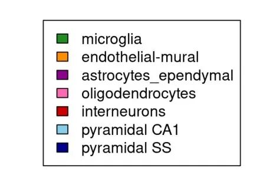

SCENIC单细胞转录因子预测|3.软件安装与数据准备
原文：https://mp.weixin.qq.com/s?__biz=MzAwMzIzOTk5OQ==&mid=2247500631&idx=1&sn=5d73db4dcc74b66de07dee9db910bb83&chksm=9b3cba07ac4b3311d1820bb305778aea707294f19fd6ff2631cd003da80bdcff8f8bc8ed34de#rd 合集：单细胞教程全收录
写在前面 SCENIC全称Single Cell rEgulatory Network Inference and Clustering，就像字面意思那样，其功能为单细胞调控网络的推断与聚类。本次内容我们先与大家一起做好准备工作，完成软件安装、数据库文件与输入文件的准备工作。测试数据和学习手册可在之前的推送中获取：SCENIC单细胞转录因子预测|2.学习手册最近下载的同学比较多，网络拥挤时建议在订阅链接中获取资料，百度云链接会更稳定一些，没有波峰波谷影响：2023年订阅须知 视频教程
B站同步播出：
https://www.bilibili.com/video/BV1Mg4y1c7wU?p=3
图文教程
一、SCENIC
SCENIC全称Single Cell rEgulatory Network Inference and Clustering，就像字面意思那样，功能是单细胞调控网络的推断与聚类(不过rEgulatory 首字母取E真是。。。)，主要用于计算单细胞测序中的基因调控网络及与细胞类型间的联系
能翻的读者可以翻出去看看官方教程，#这个工作也是被发表在了《Natrue method》上：Aibar, S., González-Blas, C., Moerman, T. et al. SCENIC: single-cell regulatory network inference and clustering. Nat Methods 14, 1083–1086 (2017).
该软件包拥有R与python两个版本，按照作者的推荐，除非你对R和可视化有很深的执念（比如我这种不太懂python和Nextflow ），否则的话还是推荐各位使用python的版本，毕竟Python的计算能力更强,占用的硬件资源也更少（但可视化的功能基本等于没有）。
1.1 构建基因调控网络(GRN)
计算转录因子(TF)靶基因的共表达情况,保留共表达的靶基因矩阵，并构建TF的共表达模型，由GENIE3/GRNBoost实现。
通过DNA-motif分析选择TF潜在直接结合的靶点(regulon)，由RcisTarget实现
1.2 通过regulon 判定细胞状态
计算每个细胞的GRN活性，由AUCell实现，AUCell完整教程已更：单细胞基因集评分之AUCell。通过一定的阈值将AUCell score的连续性矩阵转换为二元矩阵(on/off)，根据矩阵可进一步解释生物学意义。
二、准备步骤
2.1 安装
2.1.1 装包
SCENIC的workflow主要依赖三个R包的支持：
1、GENIE3：用于共表达网络的计算(也可以用GRNBoost2替代)
2、RcisTarget：转录因子结合motif的计算
3、AUCell：识别单细胞测序数据中的激活基因集(gene-network)
安装下面的包可能会花费大量的时间，可能要解决很多环境依赖问题、包的版本问题，当然，我在服务器中也已经给大家布置好了，可以申请免费的用一用有root权限的共享服务器,注册即送200￥
#安装是个永恒的难题，我在window中BiocManager==1.30.16,R==4.0.6以及本篇的sessionInfo环境下安装是没有问题的
#在Linux中如果你对conda比较熟悉那么也很好安装
if (!requireNamespace("BiocManager", quietly = TRUE))install.packages("BiocManager")
BiocManager::version()
#当你的bioconductor版本大于4.0时
if(!require(SCENIC))BiocManager::install(c("AUCell", "RcisTarget"),ask = F,update = F);BiocManager::install(c("GENIE3"),ask = F,update = F)#这三个包显然是必须安装的
### 可选的包：
#AUCell依赖包
if(!require(SCENIC))BiocManager::install(c("zoo", "mixtools", "rbokeh"),ask = F,update = F)
###t-SNEs计算依赖包:
if(!require(SCENIC))BiocManager::install(c("DT", "NMF", "ComplexHeatmap", "R2HTML", "Rtsne"),ask = F,update = F)
# #这几个包用于并行计算，很遗憾，Windows下并不支持，所以做大量数据计算时最好转战linux：
if(!require(SCENIC))BiocManager::install(c("doMC", "doRNG"),ask = F,update = F)
#可视化输出
# To export/visualize in http://scope.aertslab.org
if (!requireNamespace("devtools", quietly = TRUE))install.packages("devtools")
if(!require(SCopeLoomR))devtools::install_github("aertslab/SCopeLoomR", build_vignettes = TRUE)#SCopeLoomR用于获取测试数据
if (!requireNamespace("arrow", quietly = TRUE)) BiocManager::install('arrow')
#这个包不装上在runSCENIC_2_createRegulons那一步会报错，提示'dbs'不存在
library(SCENIC)#这就安装好了，试试能不能正常加载
if(!require(SCENIC))devtools::install_github("aertslab/SCENIC")
packageVersion("SCENIC")#这里我安装的是1.3.1
library(SCENIC)
#bioconductor版本小于4.0或你的R（3.6）的版本也比较老，你可能得试试下面的方法进行安装
devtools::install_github("aertslab/SCENIC@v1.1.2")
devtools::install_github("aertslab/AUCell")
devtools::install_github("aertslab/RcisTarget")
devtools::install_github("aertslab/GENIE3")
2.1.2 官方手册
vignetteFile <- file.path(system.file('doc', package='SCENIC'), "SCENIC_Running.Rmd")
file.copy(vignetteFile, "SCENIC_myRun.Rmd")
# or:
vignetteFile <- "https://raw.githubusercontent.com/aertslab/SCENIC/master/vignettes/SCENIC_Running.Rmd"
download.file(vignetteFile, "SCENIC_myRun.Rmd")
2.2 sessionInfo
如果有安装失败的情况，第一件事是检查报错提示信息，第二件事就是检查环境是否与我一致
sessionInfo()
## R version 4.2.1 (2022-06-23)
## Platform: x86_64-pc-linux-gnu (64-bit)
## Running under: Ubuntu 20.04.4 LTS
##
## Matrix products: default
## BLAS: /usr/lib/x86_64-linux-gnu/blas/libblas.so.3.9.0
## LAPACK: /usr/lib/x86_64-linux-gnu/lapack/liblapack.so.3.9.0
##
## locale:
## [1] LC_CTYPE=en_US.UTF-8 LC_NUMERIC=C
## [3] LC_TIME=en_US.UTF-8 LC_COLLATE=en_US.UTF-8
## [5] LC_MONETARY=en_US.UTF-8 LC_MESSAGES=en_US.UTF-8
## [7] LC_PAPER=en_US.UTF-8 LC_NAME=C
## [9] LC_ADDRESS=C LC_TELEPHONE=C
## [11] LC_MEASUREMENT=en_US.UTF-8 LC_IDENTIFICATION=C
##
## attached base packages:
## [1] stats graphics grDevices utils datasets methods base
##
## loaded via a namespace (and not attached):
## [1] bslib_0.4.1 jquerylib_0.1.4 pillar_1.8.1
## [4] compiler_4.2.1 tools_4.2.1 digest_0.6.30
## [7] jsonlite_1.8.3 evaluate_0.15 lifecycle_1.0.3
## [10] tibble_3.1.8 gtable_0.3.1 pkgconfig_2.0.3
## [13] rlang_1.0.6 cli_3.4.1 DBI_1.1.3
## [16] rstudioapi_0.13 yaml_2.3.6 xfun_0.31
## [19] fastmap_1.1.0 stringr_1.5.0 dplyr_1.0.10
## [22] knitr_1.39 sass_0.4.4 generics_0.1.3
## [25] vctrs_0.5.1 airports_0.1.0 hms_1.1.2
## [28] grid_4.2.1 tidyselect_1.2.0 glue_1.6.2
## [31] R6_2.5.1 fansi_1.0.3 rmarkdown_2.14
## [34] openintro_2.3.0 usdata_0.2.0 ggplot2_3.3.6
## [37] readr_2.1.2 tzdb_0.3.0 magrittr_2.0.3
## [40] scales_1.2.1 htmltools_0.5.3 ellipsis_0.3.2
## [43] assertthat_0.2.1 colorspace_2.0-3 utf8_1.2.2
## [46] stringi_1.7.8 munsell_0.5.0 cachem_1.0.6
## [49] cherryblossom_0.1.0
2.3 测试数据
2.3.1 从测试数据中提取表达矩阵与注释信息
输入数据的表达矩阵为gene-summarized counts ，不同于其他进阶分析的是，输入的数据最好是raw counts 或normalized counts 。计算后的TPM 或FPKM/RPKM 之类也是允许的, 但是这些可能会导致人为的共变量 引入，避免节外生枝，我还是推荐用raw count。但总的来说， raw (logged) UMI counts , normalized UMI counts , 和TPM 都能产生值得信赖的效果
formloom
loomPath <- system.file(package="SCENIC", "examples/mouseBrain_toy.loom")
library(SCopeLoomR)
##
## Attaching package: 'SCopeLoomR'
## The following object is masked from 'package:base':
##
## flush
loom <- open_loom(loomPath)#获取loom文件
exprMat <- get_dgem(loom)#取出表达信息
class(exprMat)
## [1] "matrix" "array"
exprMat[1:4,1:4]
## 1772066100_D04 1772063062_G01 1772060224_F07 1772071035_G09
## Arhgap18 0 0 0 0
## Apln 0 0 0 0
## Cnn3 0 0 0 0
## Eya1 0 0 0 4
cellInfo <- get_cell_annotation(loom)#获得注释信息
cellInfo[1:4,1:3]
## CellType nGene nUMI
## 1772066100_D04 interneurons 170 509
## 1772063062_G01 oligodendrocytes 152 443
## 1772060224_F07 microglia 218 737
## 1772071035_G09 pyramidal CA1 265 1068
close_loom(loom)
上面我们说了如何从loom中读取表达矩阵与注释信息，而Python版的SCENIC是推荐使用loom作为输入数据的,这里教大家如何利用表达矩阵和注释信息创建loom文件(to loom)
dir.create("data")
## Warning in dir.create("data"): 'data' already exists
loom <- build_loom("data/mouseBrain.loom", dgem=exprMat)
## [1] "Adding global attributes..."
## [1] "Adding matrix..."
##
|
| | 0%
|
|======================================================================| 100%[1] "Adding column attributes..."
## [1] "Adding default metrics nUMI..."
## [1] "Adding default metrics nGene..."
## Warning in doTryCatch(return(expr), name, parentenv, handler): No default
## embedding set for the loom. You'll not be able to visualize it in SCope.
## [1] "Adding row attributes..."
## [1] "Adding columns graphs..."
## [1] "Adding row graphs..."
## [1] "Adding layers..."
loom <- SCENIC::add_cell_annotation(loom, cellInfo)
## Warning in SCENIC::add_cell_annotation(loom, cellInfo): Columns 'nGene' and
## 'nUMI' will not be added as annotations to the loom file.
close_loom(loom)
seurat对象怎么取类推就好啦
singleCellMatrix <- Seurat::Read10X(data.dir="filtered_gene_bc_matrices/hg19/")
exprMat <- as.matrix(scRNAsub@assays$RNA@counts)
cellInfo <- as.data.frame(scRNAsub@meta.data)
SingleCellExperiment也是一个单细胞数据分析的利器，以后有机会我们也出个教程
library(SingleCellExperiment)
## Get data from sce object:
exprMat <- counts(sce)
cellInfo <- colData(sce)
GEO ，说实话我还真没这样从GEO下载过数据
#这次的数据来自于GSE60361
# dir.create("SCENIC_MouseBrain"); setwd("SCENIC_MouseBrain") # if needed
# (This may take a few minutes)
if (!requireNamespace("GEOquery", quietly = TRUE)) BiocManager::install("GEOquery");library(GEOquery)
geoFile <- getGEOSuppFiles("GSE60361", makeDirectory=F)
gzFile <- grep("Expression", basename(rownames(geoFile)), value=TRUE)
gzFile#压缩文件名
txtFile <- gsub(".gz", "", gzFile)
txtFile#解压缩后的文件名
gunzip(gzFile, destname=txtFile, remove=TRUE)#解压缩
library(data.table)
geoData <- fread(txtFile, sep="\t")
geoData[1:4,1:4]
geneNames <- unname(unlist(geoData[,1, with=FALSE]))
geneNames[1:5]
exprMatrix <- as.matrix(geoData[,-1, with=FALSE])
exprMatrix[1:4,1:4]
rm(geoData)
dim(exprMatrix)
rownames(exprMatrix) <- geneNames
exprMatrix <- exprMatrix[unique(rownames(exprMatrix)),]
exprMatrix[1:5,1:4]
file.remove(txtFile)#不留下垃圾
如果你无法正常运行上面的命令
#可以尝试在R语言里download.file
download.file('https://ftp.ncbi.nlm.nih.gov/geo/series/GSE60nnn/GSE60361/suppl/GSE60361_C1-3005-Expression.txt.gz','Expression.txt.gz')
download.file('https://ftp.ncbi.nlm.nih.gov/geo/series/GSE60nnn/GSE60361/suppl/GSE60361_spikes_annotation_and_abundance.xlsx','GSE60361_spikes_annotation_and_abundance.xlsx')
#但是我个人感觉linux里的wget更稳定
system('wget https://ftp.ncbi.nlm.nih.gov/geo/series/GSE60nnn/GSE60361/suppl/GSE60361_C1-3005-Expression.txt.gz > GSE60361_C1-3005-Expression.txt.gz')
#但是我个人感觉linux里的wget更稳定
system('wget https://ftp.ncbi.nlm.nih.gov/geo/series/GSE60nnn/GSE60361/suppl/GSE60361_spikes_annotation_and_abundance.xlsx > GSE60361_spikes_annotation_and_abundance.xlsx')
从AUCell中读取注释信息
cellLabels <- paste(file.path(system.file('examples', package='AUCell')), "mouseBrain_cellLabels.tsv", sep="/")
cellLabels <- read.table(cellLabels, row.names=1, header=TRUE, sep="\t")
cellInfo <- as.data.frame(cellLabels)
colnames(cellInfo) <- "CellType"
saveRDS(cellInfo,'int/cellInfo.rds')
2.3.2 保存输入数据
saveRDS(cellInfo, file="int/cellInfo.Rds")
# Color to assign to the variables (same format as for NMF::aheatmap)
colVars <- list(CellType=c("microglia"="forestgreen",
"endothelial-mural"="darkorange",
"astrocytes_ependymal"="magenta4",
"oligodendrocytes"="hotpink",
"interneurons"="red3",
"pyramidal CA1"="skyblue",
"pyramidal SS"="darkblue"))
colVars$CellType <- colVars$CellType[intersect(names(colVars$CellType), cellInfo$CellType)]
saveRDS(colVars, file="int/colVars.Rds")
plot.new(); legend(0,1, fill=colVars$CellType, legend=names(colVars$CellType))#查看保存了哪些细胞类型

2.4 RcisTarget 数据库
2.4.1 文件获取
SCENIC的运行需要依赖RcisTarget 数据库的内置数据用于motif rankings(score the motifs in the promoter of the genes)，这个内置数据集比较难下载(可能会收到长城的影响，大家可以选择可选上网)，如果不下载完全，运行initializeScenic时可能会报错或崩溃，运行runGenie3()时会导致R直接崩溃闪退，我们已经给大家下载好且生成了md5值供大家下载，可在往期推送中获取：
SCENIC单细胞转录因子预测|2.学习手册
以上文件下载后请记得进行md5校验，教程可参考我们的Linux课程：Linux| 22. (解)压缩与md5值校验
对自己网络有信心的可以按下面的网址自己试试: 懂linux的也可以这么下：https://resources.aertslab.org/cistarget/help.html 下完最好检查一下md5：
https://resources.aertslab.org/cistarget/databases/sha256sum.txt
cisTarget 数据库文件(目前构建好的物种有 drosophila melanogaster/ , homo sapiens/ , mus_musculus/)。 虽然目前支持的物种只有三个，但是可以参考这个方法构建自己所需物种的cisTarget database，这样就约等于SCENIC可以支持所有物种。
#地址
#human：
dbFiles <- c("https://resources.aertslab.org/cistarget/databases/homo_sapiens/hg19/refseq_r45/mc9nr/gene_based/hg19-500bp-upstream-7species.mc9nr.feather",
"https://resources.aertslab.org/cistarget/databases/homo_sapiens/hg19/refseq_r45/mc9nr/gene_based/hg19-tss-centered-10kb-7species.mc9nr.feather")
#mouse：
dbFiles <- c("https://resources.aertslab.org/cistarget/databases/mus_musculus/mm9/refseq_r45/mc9nr/gene_based/mm9-500bp-upstream-7species.mc9nr.feather",
"https://resources.aertslab.org/cistarget/databases/mus_musculus/mm9/refseq_r45/mc9nr/gene_based/mm9-tss-centered-10kb-7species.mc9nr.feather")
#fly：
dbFiles <- c("https://resources.aertslab.org/cistarget/databases/drosophila_melanogaster/dm6/flybase_r6.02/mc8nr/gene_based/dm6-5kb-upstream-full-tx-11species.mc8nr.feather")
#下载
dir.create("cisTarget_databases"); setwd("cisTarget_databases")
for(featherURL in dbFiles)
{
download.file(featherURL, destfile=basename(featherURL)) # saved in current dir
}
2.4.2 RcisTarget 数据库文件初始化
这一步相当于给上面下好的文件构建索引并设置一些默认参数
### Initialize settings
library(SCENIC)
scenicOptions <- initializeScenic(org="mgi",#mouse填'mgi', human填'hgnc',fly填'dmel')
dbDir="cisTarget_databases/mouse/mouse.mm9/", nCores=8)#这里可以设置并行计算
## Motif databases selected:
## mm9-500bp-upstream-7species.mc9nr.feather
## mm9-tss-centered-10kb-7species.mc9nr.feather
## Using the column 'features' as feature index for the ranking database.
## Using the column 'features' as feature index for the ranking database.
scenicOptions@inputDatasetInfo$cellInfo <- "int/cellInfo.Rds"
saveRDS(scenicOptions, file="int/scenicOptions.Rds")
往期回顾
参考
[1]Aibar S, González-Blas CB, Moerman T, Huynh-Thu VA, Imrichova H, Hulselmans G, Rambow F, Marine JC, Geurts P, Aerts J, van den Oord J, Atak ZK, Wouters J, Aerts S. SCENIC: single-cell regulatory network inference and clustering. Nat Methods. 2017 Nov;14(11):1083-1086. doi: 10.1038/nmeth.4463. Epub 2017 Oct 9.
[2]https://github.com/aertslab/SCENIC
单细胞系列教程目录
 单细胞数据分析系列教程：B站视频，先看一遍视频再去看推送操作，建议至少看三遍：https://www.bilibili.com/video/BV1S44y1b76Z/以下的资料都可以在这里订阅：单细胞数据基础分析学习手册
单细胞数据分析系列教程：B站视频，先看一遍视频再去看推送操作，建议至少看三遍：https://www.bilibili.com/video/BV1S44y1b76Z/以下的资料都可以在这里订阅：单细胞数据基础分析学习手册
单细胞测序基础数据分析保姆级教程，代码部分整理在往期推送之中：手把手教你做单细胞测序数据分析|1.绪论 手把手教你做单细胞测序数据分析|2.各类数据结构与读取方法手把手教你做单细胞测序数据分析|3.单样本分析 手把手教你做单细胞测序数据分析|4.多样本整合 手把手教你做单细胞测序数据分析|5.细胞类型注释，从入门到入土手把手教你做单细胞测序数据分析|6组间差异分析 手把手教你做单细胞测序数据分析|7基因集富集分析 Seurat中分类变量处理技巧 沉浸式统计细胞比例
SCENIC单细胞转录因子预测：SCENIC单细胞转录因子预测|1.绪论 SCENIC单细胞转录因子预测|2.学习手册
单细胞图片改造计划：改造单细胞降维图| 1.DimPlot的探索 改造单细胞降维图| 2.ggplot2中的DIY 改造单细胞降维图| 3.3D降维图与动图绘制
上游fastq文件处理： 单细胞分析的最上游——处理Fastq文件：cellranger 单细胞分析的最上游——处理Fastq文件：dropseqRunner有奖提问,这个smart-Seq2数据实战的比对率为何如此低？
细胞通讯B站连续播放起来比较方便： https://www.bilibili.com/video/BV1Ab4y1W7qx?p=1往期推送单细胞测序数据进阶分析—《细胞通讯》1.概论 单细胞测序数据进阶分析—《细胞通讯》2.1CellChat基础分析教程 单细胞测序数据进阶分析—《细胞通讯》2.2CellChat多组别分析 给你们申请到了免费的128GB云服务器 拟时序分析B站连续播放起来比较方便： https://www.bilibili.com/video/BV1br4y1x7Hf?p=1往期推送单细胞测序数据进阶分析—《拟时序分析》1.概论 单细胞测序数据进阶分析—《拟时序分析》2.monocle概论单细胞测序数据进阶分析—《拟时序分析》3.monocle2实操：完整版 单细胞测序数据进阶分析—《拟时序分析》4.初识monocle3 单细胞测序数据进阶分析—《拟时序分析》5.monocle3的降维、分群、聚类单细胞测序数据进阶分析—《拟时序分析》6.monocle3的拟时序分析 解决monocle2的orderCells报错的两种方法 一文搞定拟时序分析的下游可视化探索
其他单细胞相关技术贴也在这里：细胞的数量由誰决定？单细胞中应该如何做GSVA？答读者问（三）：单细胞测序前景答读者问（四）：如何分析细胞亚群答读者问（八）：为什么Read10X也会报错? 答读者问（十）整合后的表达矩阵，如何拆分出分组信息？ 答读者问（十一）如何一次性读取一个目录下的cellranger输出文件？ 给你安排一个懂生信的工具人（十）：不学编程 零代码完成单细胞测序数据分析：Loupe Browser 什么？不做单细胞也能分析细胞类群和免疫浸润？ 答读者问 （十三）查看Seurat对象时的ERROR：type='text' 各类单细胞对象（数据格式）转换大全（一）批量整理好GEO中下载的单细胞数据答读者问 （十五）稀疏矩阵转matrix, as.matrix函数是下下策 答读者问 （十六）做单细胞测序到底需要多少内存答读者问 （十七）调用的线程越多就算的越快嘛? 答读者问（十八）、一个我至少被问过30遍的monocle报错没有barcode文件的单细胞数据要怎么读取 单细胞基因集评分之AUCell 粉丝来稿|1. Seurat4相较于Seurat3的几点改动 如何加快Seurat的计算速度 一文搞定单细胞基因集评分答读者问（二十）四个单细胞样本只给了一套文件怎么读 人类单细胞测序数据中有哪些以"**-"开头的基因 为什么总把分辨率调的很高 Seurat中如何让细胞听你指挥 答读者问| 22.object 'CsparseMatrix_validate' not found 单细胞数据在R中的读取及存储速度太慢怎么办？这个神包来帮你！ 一文搞定单细胞/空间转录组的WGCNA分析
单细胞文献阅读：测序技术的发展与应用 一些生物信息学的基本概念 Biomamba助推的第二篇文章!发表了！又来了！Biomamba生信基地助推的第四篇文章! 单细胞测序解析糖尿病肾病中肾小球的动态变化 Cell metabolism| 单细胞测序技术解析健康人与T2D患者的胰岛差异 Science| 小鼠全肾单细胞测序开篇之作 一篇不花钱就能白嫖的文章 不会吧不会吧，Nature都能白嫖？ 高氧下小鼠肺发育损伤的ScRNA图谱 IgAN & STRT-Seq 老树开新花—EGFR、肿瘤、免疫+scRNA-Seq 癌前基质细胞驱动BRCA1肿瘤发生 紧跟生信"钱"沿,胰腺癌&免疫多模态图谱 原发头颈癌和肿瘤转移微生态 《Cell Metabolism》：肾脏疾病&代谢&核受体ESRRA 《Nature communication》：PD-1&急性髓细胞性白血病&T Cell 单细胞测序揭示鼻咽癌微环境的基质动力学和肿瘤特异性特征 《Nature》：MYB调控衰竭性T细胞对检查点抑制的响应单细胞都能活检测序了？文献阅读(二十九)、单细胞测序做到什么程度能毕业|硕士篇 文献阅读(三十)、单细胞测序做到什么程度能毕业|博士篇2022年了，都有哪些器官/组织有scRNA-Seq数据|小鼠篇 2022年了，都有哪些器官/组织有scRNA-Seq数据|人类篇 2023年了, 都哪些物种有scRNA-Seq数据终于读到一篇用monocle3做拟时序的文章 单细胞转录组+亚细胞空间代谢组=25分文章 酸了，六个样本的scRNA-Seq+差异分析=9分文章自测scRNA-Seq+scWGBS=3分三区文章？ 百万级单细胞多组学数据集成空间转录组与单细胞转录组整合分析工具大比拼
单细胞注释复写单细胞注释复写(一):Human Fetal Kidney单细胞注释复写(二): human colorectal
非技术帖：生信分析为什么要使用服务器？ 为实验室准备一份生物信息学不动产

如何联系我们
 公众号后台消息更新不及时，超过48h便不允许回复读者消息，这里给大家留一下领取资料、免费服务(有root权限的共享服务器,注册即送200￥)的微信号 ，方便各位随时交流、提建议(科研任务繁重，回复不及时请见谅)。此外呼声一直很高的交流群 也建好了，欢迎大家入群讨论：永久免费的千人生信、科研交流群
公众号后台消息更新不及时，超过48h便不允许回复读者消息，这里给大家留一下领取资料、免费服务(有root权限的共享服务器,注册即送200￥)的微信号 ，方便各位随时交流、提建议(科研任务繁重，回复不及时请见谅)。此外呼声一直很高的交流群 也建好了，欢迎大家入群讨论：永久免费的千人生信、科研交流群
大家可以阅读完这几篇之后添加给生信入门初学者的小贴士
如何搜索公众号过往发布内容

 您点的每个赞和在看，我都认真当成了喜欢
您点的每个赞和在看，我都认真当成了喜欢